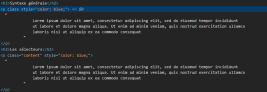

Vous venez de voir la documentation de la méthode addClass et disposez du code suivant :
En vous aidant de la documentation, identifiez comment supprimer la classe content du premier paragraphe.
Essayez de regarder du côté de la méthode removeClass.
Dans l'exemple de la méthode addClass, on remarque une méthode last, peut-être existe-t-il une méthode first ?
La méthode first permet de sélectionner le premier élément, la méthode removeClass permet de supprimer une classe.
See the Pen Untitled by OpenSpirit (@OpenSpirit) on CodePen.
Avez-vous remarqué que, si vous exécutez d'abord la modification de CSS avant de supprimer la classe, celui-ci reste pourtant appliqué ? C'est normal !
Inspectez votre DOM. Vous remarquerez que la méthode css ajoute un attribut style inline à chaque paragraphe disposant de la classe content.
La seconde instruction demande à ce que l'on supprime la classe. Le CSS n'y étant pas associé directement, il n'a pas disparu.
